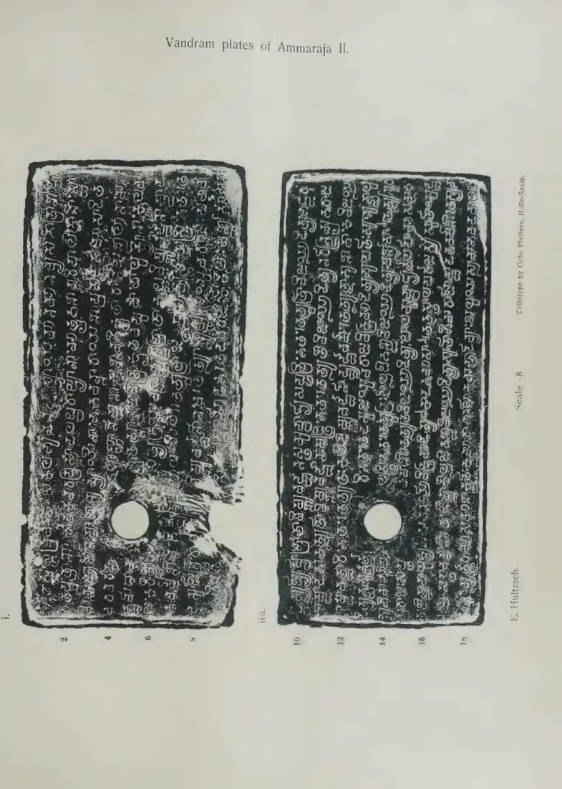
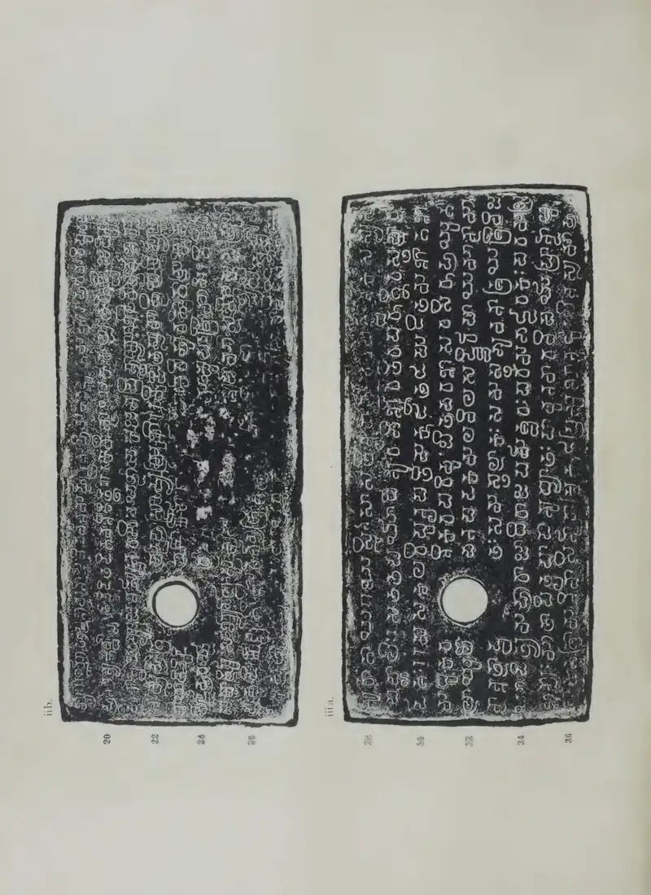

Vandram plates of Ammarâja II
VANDRAM PLATES OF AMMARAJA II.
BY PROFESSOR E. HULTZSCH, PH.D.; HALLE (SAALE).
These plates were found in the backyard of Buddharaju Venkataraju of Vandram, a village in the Bhîmavaram tâluka of the Kistna district, and were forwarded by the Head Assistant Collector of Narsapur through the Collector of Kistna to Rai Bahadur Venkayya, who sent me two sets of ink-impressions of them, with the following remarks :—
“These are five copper-plates, measuring in length and in height. They have high rims more than thick. The ring on which the plates are strung was cut by me for the first time and soldered subsequently. It is oval, measures by , and is nearly thick. The ends of the ring are secured in an expanded eight-petalled lotus at the bottom of a circular seal, which measures in diameter. The seal is much damaged, but bears, in relief on a countersunk surface, the legend âri-Tribha[vanîmûksa], with a boar facing the proper left over it and a floral device below. The other symbols cut in the seal are not quite distinct. Traces of the sun over the boar, of the crescent of the moon behind his tail, and of an elephant goad in front of him are visible.”
The first and last plates bear writing only on one side, and the three remaining plates on both sides. The plates are in a bad state of preservation. Of plate i. a small portion is missing. Plate ii.b is a palimpsest, and part of its writing is effaced. The two first lines of plate iii.b and some letters of the two last lines of plate iv.a are damaged by corrosion. Of plate iv.b the two first lines and part of the third are in a still worse condition. On the last plate (v.) some letters are more or less doubtful.
After the MS. of this article had gone to the press, I received from Mr. Venkayya the original copper-plates, with the help of which I was able to improve my readings of several indistinct words.
The alphabet is ancient Telugu of the usual type. I would only draw attention to the peculiar form of the secondary â in -mûrttêr, l. 18, and samâhâya, l. 36 f. The language is Sanskrit; but the four first lines of the last plate contain some Telugu words. The Sanskrit portion consists of both prose and verses.
The inscription opens with the genealogy of Ammarâja (II.) of the (Eastern) Châlukya (l. 5) dynasty. ll. 1-17 are practically identical with ll. 1-23 of the Elavařru grant of the same king.1 But Vikramâditya (I.) receives the title Yuvarâja (l. 13), and the name Kollabiganda is twice (ll. 14 and 17) spelt with b, not with bh.
Ammarâja II. is then praised in seven verses, all of which occur in his Padânkalûru grant,2 where they are however differently arranged.3 The two verses (5 and 6) recording the date of his coronation are also found in the Maliyapûndi grant.4 It is a curious fact that the major portion of plate ii.b (consisting of verses 3-5 and nearly the whole of verse 6) of the Vandram plates is engraved over another grant of Ammarâja II., which seems to have been partially effaced by the writer, but of which distinct traces are still visible.5 I subjoin a transcript of those lines of the original inscription on plate ii.b which can still be made out.
20 . . . . . स समस्तभुवनाश्रयश्रीविजयादित्यम-
21 हाराजाधिराजपरमेश्वरः परमभट्टारकः परमब्रह्मणो मातापितृपादानुध्या-
22 यी वेंगीसहस्रराष्ट्रकूटप्रमुखान् कुटुंबिनस्माह्येत्यमाज्ञा-
23 पयति [*] विदितम . . . . . स वंगे वशिष्ठगोत्रो विहान् आ-
The poetical description of Amma's reign is followed by a prose passage (ll. 30-37) which is worded in nearly the same manner as ll. 30-36 of the Elavařru grant.6 Ammarâja II., who is here styled 'Samastabhuvanâsraya, the glorious Vijayâditya (VI.) Mahârâjâdhirâja-Paraméśvara Paramabhattâraka, the very pious one, who meditates at the feet of (his) mother and father, thus commands, having called (them) together, the ryots, headed by the Râshṭrakútas, inhabiting the twelve villages (the chief one of which is) Prândořu in the Pâvunavâra district (vishaya).'
So far the text can be easily transcribed and understood. But the remainder of the inscription cannot be deciphered in full, as a number of words in the damaged portions are doubtful or quite illegible. Besides, the author of the long metrical passage describing the donee (ll. 37-61) knew so little Sanskrit, or got his draft copied in such an imperfect way, that I am unable to propose satisfactory corrections even of some of the well-preserved portions of it. The whole of this passage seems to be in verse. Making allowance for the damaged and lost lines I number the verses as 8-23. Verse 8 praises the family (gôtra) named Mitrayu. A descendant of it was Tûrkkaya-Peddiya7 (v. 9), who lived in the large village Râvipařru (v. 10), his son Vijayâditya (v. 11) and his grandson Tûrkkiya-Yajvan (v. 12). The last had by Kandamâmbâ a son named Kuppanayya (v. 14), who seems to have enjoyed the titles of minister (amâtya, v. 15) and vassal (sâmanta, v. 16). He had the surname Vipranârâ[yaṇa] (v. 21) and founded a shrine of Śiva at Drâkshârâma.8
"To this Kuppan[â]mâtya, who is devoted to Me, the village named Tândeřu has been given by Us, having made (it) an Agrahâra; to whom (the village) named [Beți]pûndi (in the neighbourhood) of Prândořu9 in your district10 (vishaya), together with the share of gold,
1 Ind. Ant. Vol. XII. p. 91 ff.
2 Ibid. Vol. VII. p. 15 ff.
3 The verses of the Padânkalûru grant (ll. 23-37) correspond to the following verses of the Vandram plates: 1, 4, 3, 5, 6, 7, 2; and an additional verse is inserted between 1 and 4.
4 Above, p. 47 ff.
5 Both sides of plate v. also exhibit traces of obliterated writing. A grant of Bhûma I. is a similar palimpsest; see Prof. Kielhorn's remarks, above, Vol. V. p. 127.
6 In the latter the epithet mâtâpitripâdânudhyâtah (l. 35) is however missing.
7 With Tûrkkaya compare the names Tûrkaśarman (above, Vol. V. p. 120, note 14) and Tûrkkama (Ind. Ant. Vol. XIII. p. 214, text l. 49).
8 Drâkshârâmê krita-Śiva-nilayô; v. 22 (l. 58).
9 Prândořti is the Telugu genitive of Prândořu (l. 35).
10 I.e. in the Pâvunavâra-vishaya of l. 35.
was given with exemption from all taxes, having made (it) an Agrahára.” I subjoin my reading of this passage, which is so peculiarly worded, that it remains doubtful whether the present grant refers to Tâṇḍeṣu or to Beṭipûṇḍi or to both, and whether only the second or both of them belonged to the Pâvunavâra-vishaya.
61 . . . . . तस्मै कुप्पन[*]म[ा]ल्या[य]
62 मद्वक्ताय1 ताण्डेऽनामयाममयहारिक्कल्योस्माभिदत्त2 । य[स्य भव]द्वि-
63 षये प्रान्दोऽति [वटि]पूण्डिनाम सह[*]टकभागमयहा[री*]क्लय सर्व[कर]-
64 पर3 दत्त इति विदितमस्तु व[:] ॥ अस्य (स) यामस्यावधय[:*] ॥ . . . .
Of the subsequent description of the boundaries of the village granted (ll. 64-67) I am unable to furnish a satisfactory transcript. The remainder of the inscription (ll. 67-72) is nearly identical with ll. 57-60 of the Elavaṣru grant.4 The last line (72) seems to read:—
य(त) ते क्वमिः ॥ [२५*] आज्ञमिः 5कष्टकराजः [*] महा[का]मष्टक[*]व्यं [*] जोन्ताचार्येण लिखितं ॥
Accordingly the Ájñāpti was the Kaṭakarija.6 the poet7 Mahâ[kâ?]bhaṭṭa, and the writer Jontâchârya.8
Of the localities mentioned in this inscription, Drákshârâma is well-known,9 and the Pâvunavâra-vishaya is probably the same as Pâgunavara-vishaya in a grant of Bhíma II.10 The villages Prândoṣu, Beṭipûṇḍi, Tâṇḍeṣu and Râvipaṣru I am unable to identify.
FIRST HALF OF THE TEXT.11
First Plate.
1 ❖ स्वस्ति श्रीमतां सकलभुवनसंस्तूयमानमानव्यसगीत्राणां हा-
2 रीतिपुत्राणां कौशिकीवरप्रसादलब्धराज्यानां मातृगणपरिपालीतानां12 स्वा-
3 मिमहासेनपादानुध्यायीनां13 भगवन्नारायणप्रसादसमासादित-
4 वरवराहलाञ्छनेक्षणक्षणवशीकृतारातिमण्डलानाम-
5 14श्रमेधावभृतस्नानपवित्रीकृतवपुषां चालुक्यानां कुलम-
6 लंकरिणोः सत्य[*]श्रयवल्लभेन्द्र[स्य*] भाता कुञ्जविष्णुवर्द्धनोष्टाद-
7 श वर्ष[ा]णि वेंगिदेशमपालयत् ॥ तत्पुत्रो जयसिंहस्त्रयस्त्रिंशतं । त-
8 दनुजेन्द्ररा[जनन्दनो] विष्णुवर्द्धनो नव । तत्सूनुर्मगियुवराजः पंचविं-15
9 शतिं । त[त्पुत्रो जय]सिंहस्त्रयोदश । तदवरजः कोक्लिलिः षण्मासान् ॥
1 Read मद्वक्ताय.
2 Read °हारीक्लयास्माभिर्दत्तः.
3 Read परिहारेण.
4 Instead of tath-ôktah Vyásêna, l. 69 reads tathâ ch-ôktah Vyása-bhat!![â*]rakêna(ṇa).
5 Read कटक०.
6 See above, p. 49 f.
7 I.e. the author of the verses describing the donee. In other grants of Ammarâja II. Pôtanabhaṭṭa and Mâdhavabhaṭṭa are mentioned as ‘poets.’
8 The same person was the writer of the Elavaṣru and Padañkalâru grants
9 See e.g. above, Vol. IV. p. 37, note 3.
10 Ind. Ant. Vol. XIII. p. 213.
11 From two sets of ink-impressions and the original copper-plates.
12 Read °पालितानां.
°ध्यायिनां.
11 Read °मृघ०.
15 The amuvâra stands at the beginning of the next line.
Second Plate; First Side.
10 तस्य ज्येष्ठो भ्राता विष्णुवर्द्धनस्तमुच्चाद्य समत्रिंशतं । तत्पुत्रो विजया-
दित्यभद्रार-
11 कोष्टादश । तत्सुतो विष्णुवर्द्धनः षट्टिंशतं । तत्सुतो विजयादित्यनरेन्द्र-
मृगराज-
12 स्वाष्टाचत्वारिंशतं । तत्सुतः कलिविष्णुवर्द्धनोद्धर्द्धवर्ष । तत्सुतो गुणगां-
कविजया-
13 दित्यश्वतुश्चत्वारिंशतं । तदनुजयुवराजविक्रमादित्यभूपतेः स्तुश्वालु-
14 1क्यभिममूपालस्त्रिंशतं । तत्पुत्रः कोल्लबिगण्डविजयादित्यः षण्मासान् ।
तत्सूनुर-
15 म्मराजः सम वर्षाणि2 । तत्सुतविजयादित्यं बालमुच्चाद्य तालपो मासमेकं [1*]
16 तं जित्वा चालुक्यभीमतनयो विक्रमादित्य एकादश मासान् । ततस्ता-
लपराजस्य सुतो युद्ध-
17 मल्लः सम वर्षाणि । तं जित्वा कोल्लबिगण्डविजयादित्यसुतो भीमराजो
द्वादश वर्षाणि । तस्य म-
18 हे[श्च]रमूर्त्तरुमासमानाकृतेः कुमाराभः [1*] लोकमहादेव्याः खलु यस्सम-
भवदम्मराजा-
Second Plate; Second Side.
19 ख्यः ॥ [१*] यो रूपेण मनोजं विभवेन महेन्द्रमहिमकरमुरुमहसा
[1*] हरमरिपुरद-
20 हनेन न्यक्कुर्व्व(१)भ्राति विदितदिगवनिकिर्तिः3 ॥ [२*] कविगायककल्पतरु-
द्विजमुनि-4
21 दीनाभ्यवभ्युजनसु(न)रभिः । याचकजनचिन्तामणिरवनिशम-5
22 निर्महोग्रमहसा द्युमणि[*] ॥ [३*] विदितधराधिपविद्यो वि-
23 विधायुधकोविदो [विलीनारिकुल]ः । करितुरगागमकुश-
24 लो हरचर . . . . . मधुपः6 श्रीमान् ॥ [8*] गिरिर-
25 सवसुसंख्याब्धे7 सक[स] . . . . . [शी]र्षमासेस्मिन् [1*] क्षण-
त्रयो-
26 दशदिने भृगुवारे मैत्रनक्च[त्रे] ॥ [५*] धनुषि रवी घटलग्ने द्वाद-
27 [श]वर्षे तु [जन्मनः] पद्दं । योधादुदयगिरिन्द्रो8 रवि[रि]व लोका-
1 Read °क्यभीम°.
2 Read वर्षाणि.
3 Read °कौर्तिः. From here to the end (l. 27) this side of the plate is a palimpsest.
4 Read °तरुद्धिंज°.
5 Read °रवनीशमणि°.
6 Read हरचरणाभीजयुगलमधुपः.
7 Bead °ख्याब्दे शकसमये मार्गशीर्ष°.
8 Read °गिरीन्द्री रविमिव.
Plate 1 is bound after this page.
Plate 2 is bound after this page.
Third Plate; First Side.
28 नुरागाय ॥ [६*] यस्मिन्1 सासति नृपतौ परिपक्कानेकसस्यसं-2
29 पच्छालि: । 3सततपयोधेनुरभिर्णरीतिरपरुग्निरस्तचोरो
30 देश: ॥ [७*] स सकलरिपुनृपतिमकुटटटघटितमणिगण-
31 मधुकरनिकरपरिचुंबितचरणसरसिरुहयुग-
32 लोयु[ग*]लोचनपदकमलविलसद्दिरेफायमानो4 मा-
33 नोन्नतोडत:5 समस्तलोक: समस्तभुवनाश्रयश्रीविज-
34 यादिल्यमहाराजाधिराजप[र*]मेश्वर: परमभट्टारक: परमब्र-
35 ह्याण: मातापिढपादानुध्यात: पावुनवारविषये प्रान्दोऽ-
36 [द्वाद]श्यामनिवासिनो राष्ट्रकूटप्रमुखान्कुटुंबिनस्मामाह्न-
Third Plate; Second Side.
37 येल्यमान्नापयति ॥ . . . . .
1 Read यस्मिन्कासति.
2 The anusvâra stands at the beginning of the next line.
3 Read °रभीन्निरौति°.
4 Read °माणी.
5 The Elavagru grant (l. 32 f.) supplies the correct reading मानीन्नतो नतीरुतसमस्तलोकः.

